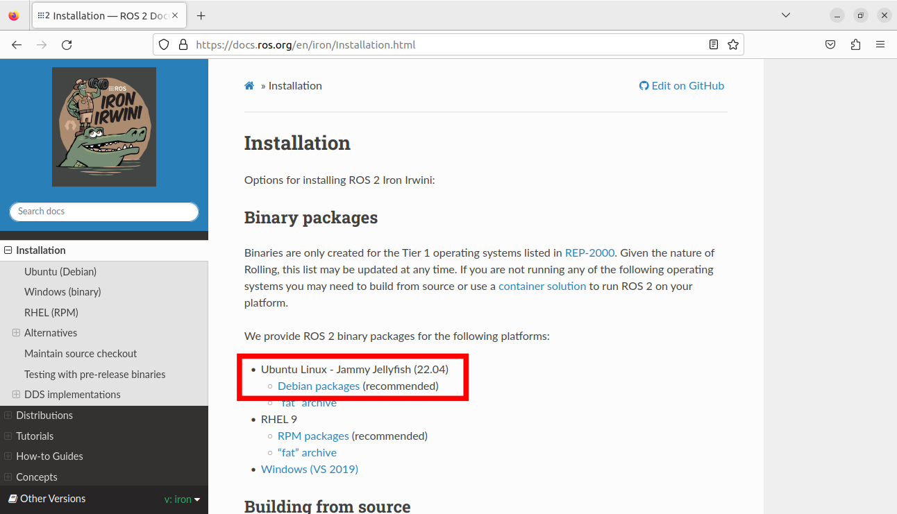

ROS2のインストール（PC）#
PCにROS2をインストールします。
ROS2のインストール#
ROS2のHP の手順に従ってインストールします。
Binary packagesのDebian packagesを選択してください。
{kind=link}
ロケールの確認。
ubuntu@mbc084:~$ locale
LANG=ja_JP.UTF-8
LANGUAGE=ja:en
LC_CTYPE="ja_JP.UTF-8"
LC_NUMERIC=ja_JP.UTF-8
LC_TIME=ja_JP.UTF-8
LC_COLLATE="ja_JP.UTF-8"
LC_MONETARY=ja_JP.UTF-8
LC_MESSAGES="ja_JP.UTF-8"
LC_PAPER=ja_JP.UTF-8
LC_NAME=ja_JP.UTF-8
LC_ADDRESS=ja_JP.UTF-8
LC_TELEPHONE=ja_JP.UTF-8
LC_MEASUREMENT=ja_JP.UTF-8
LC_IDENTIFICATION=ja_JP.UTF-8
LC_ALL=
Universeレポジトリを追加。
ubuntu@mbc084:~$ sudo apt install software-properties-common
ubuntu@mbc084:~$ sudo add-apt-repository universe
ROS 2 GPG(GNU Privacy Guard) keyの追加。
ubuntu@mbc084:~$ sudo apt update
ubuntu@mbc084:~$ sudo apt install curl -y
ubuntu@mbc084:~$ sudo curl -sSL https://raw.githubusercontent.com/ros/rosdistro/master/ros.key -o /usr/share/keyrings/ros-archive-keyring.gpg
レポジトリ情報をsource listに追加。
ubuntu@mbc084:~$ echo "deb [arch=$(dpkg --print-architecture) signed-by=/usr/share/keyrings/ros-archive-keyring.gpg] http://packages.ros.org/ros2/ubuntu $(. /etc/os-release && echo $UBUNTU_CODENAME) main" | sudo tee /etc/apt/sources.list.d/ros2.list > /dev/null
ROS2のインストール。
ubuntu@mbc084:~$ sudo apt update
ubuntu@mbc084:~$ sudo apt upgrade
ubuntu@mbc084:~$ sudo apt install ros-iron-desktop
Note
PCにはGUIツールやデモが含まれるDesktopをインストールします。
サンプルプログラムの実行#
インストールが正しく行われたか確認するために、サンプルプログラムを実行します。
講師のPCで次のコマンドを実行します。
ubuntu@mbc084:~$ source /opt/ros/iron/setup.bash
ubuntu@mbc084:~$ ros2 run demo_nodes_cpp talker
[INFO] [1688105745.373215437] [talker]: Publishing: 'Hello World: 1'
[INFO] [1688105746.373202032] [talker]: Publishing: 'Hello World: 2'
[INFO] [1688105747.373215794] [talker]: Publishing: 'Hello World: 3'
[INFO] [1688105748.373223103] [talker]: Publishing: 'Hello World: 4'
[INFO] [1688105749.373234290] [talker]: Publishing: 'Hello World: 5'
[INFO] [1688105750.373220057] [talker]: Publishing: 'Hello World: 6'
[INFO] [1688105751.373232334] [talker]: Publishing: 'Hello World: 7'
[INFO] [1688105752.373234858] [talker]: Publishing: 'Hello World: 8'
[INFO] [1688105753.373236105] [talker]: Publishing: 'Hello World: 9'
[INFO] [1688105754.373234649] [talker]: Publishing: 'Hello World: 10'
・・・
受講生のPCで次のコマンドを実行してください。
ubuntu@mbc084:~$ source /opt/ros/iron/setup.bash
ubuntu@mbc084:~$ ros2 run demo_nodes_py listener
[INFO] [1688105829.813560450] [listener]: I heard: [Hello World: 1]
[INFO] [1688105830.777293518] [listener]: I heard: [Hello World: 2]
[INFO] [1688105831.778708138] [listener]: I heard: [Hello World: 3]
[INFO] [1688105832.778873189] [listener]: I heard: [Hello World: 4]
[INFO] [1688105833.778085008] [listener]: I heard: [Hello World: 5]
[INFO] [1688105834.778792113] [listener]: I heard: [Hello World: 6]
[INFO] [1688105835.778911132] [listener]: I heard: [Hello World: 7]
[INFO] [1688105836.778868391] [listener]: I heard: [Hello World: 8]
[INFO] [1688105837.778892837] [listener]: I heard: [Hello World: 9]
[INFO] [1688105838.779006018] [listener]: I heard: [Hello World: 10]
・・・
Terminalを起動するたびにsetup fileを実行するのは面倒なので、shellのstartup scriptに書いておきます。
ubuntu@mbc084:~$ echo "source /opt/ros/iron/setup.bash" >> ~/.bashrc
ROS_DOMEIN_IDの設定#
ROS2はネットワーク上のnodeを自動的に発見します。そのため、同一ネットワークであれば複数のPCでnodeを実行させて分散処理することが簡単にできます。
一方で、複数人が同一ネットワーク上でnodeを実行すると、どのnodeから送られてきたデータか分からなくなることがあります。
そのため、ROS2ではROS_DOMAIN_IDを設定することでこの問題を回避します。ROS_DOMAIN_IDに数値を設定すると、同じ値が設定されたTerminal間でしかnodeが見られなくなります。
次のコマンドを実行してROS_DOMAIN_IDを設定してください。IDはZumoの番号と同じにします。Zumo-00を使っている場合は0とします。
ubuntu@mbc084:~$ export ROS_DOMAIN_ID=0
Terminalを起動するたびにIDを設定するのは面倒なので、shellのstartup scriptに書いておきます。
ubuntu@mbc084:~$ echo "export ROS_DOMAIN_ID=0" >> ~/.bashrc